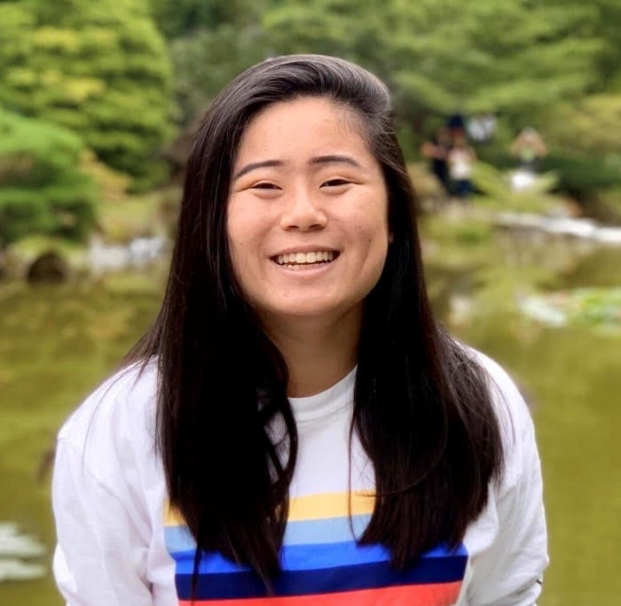

LIANNE KNIEST
Washington Aerospace Scholar
How did you first become interested in STEM?
In my Junior year of high school, I took AP Computer Science which was sponsored by the Microsoft TEALS (Technology Education and Literacy in Schools) program. Once a week, mentors from Microsoft would come in and help us in class. I really loved this class because programming allowed me to think critically and logically apply my learning to create something tangible. Through these bits of computer science exposure overtime, I realized that it wasn’t a field only for the wiz kids who started building apps at 13. I have continued to delve into computer science, taking upper level courses like Advanced Java Topics and Projects.

Can you tell us about your experience as an intern for Microsoft?
I worked in the FastTrack for Azure team and worked on two projects. First, I designed a process for sending out bi-weekly newsletter on multiple platforms such as OneNote, Outlook, and Teams Wiki, that would summarize updates within the team. Because FTA had members across the globe, it was important to maintain a navigable, cohesive form of communication with the team. My second project was building an Idea Management Board through PowerApps that would track ideas for new projects that FTA members wanted to start and needed other people to help out with. I envisioned a backend system of how people would input and search for ideas through the Idea Board and built a frontend for it.
I think what was really cool about that internship was finally being able to apply what I have learned in school to the real world and comparing the similarities and differences. For example, in AP computer science, I never had to write documentation for my projects because the teacher knows already, but at a huge company like Microsoft, documentation is key because everyone has a different project.
Can you tell us about your experience as a Washington Aerospace Scholar?
In this program, I took worked on ten projects through the course of ten weeks learning about design, the history of spaceflight, graphic mockups, etc. After the project phase, I moved on to the residency and worked with mentors from NASA, SpaceX, and Blue Origin to design a mission to mars. Each team within the program specialized in aspect of the mission and my team in particular focused on what equipment we would bring and consider the payload costs while negotiating with other teams for space. At the end, we gave a presentation to the President of the Museum of Flight about our plan.
Have you ever experienced gender bias in the STEM community?
I have been fortunate enough to never experience any overt gender bias and I'm grateful for the women that have come before me in these fields who have paved the way for my experience. Although, I do think there is a sense of gender bias in the community that needs to change. For example, during my residency, I would walk into the room and I just got the sense that the boys had a sense of entitlement to being there. They would argue with and talk over girls creating a somewhat aggressive “boys club” environment that’s especially common in aerospace where it is heavily male dominated and gender diversity is not as encouraged.
What advice would you give girls pursuing STEM?
I would just say, try to ask as many questions and reach out as much as possible. People are always open and willing to help. Email them, ask them to go out for lunch, and just talk with people in the tech-industry who can give you advice. Also, apply for everything! You never know what program or company might accept you.